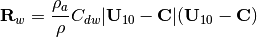
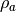
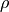
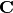
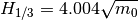
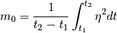

INTRODUCTION¶
What is FUNWAVE–TVD¶
FUNWAVE–TVD is the TVD version of the fully nonlinear Boussinesq wave model (FUNWAVE) initially developed by Kirby et al. (1998). The development of the present version was motivated by recent needs for modeling of surfzone–scale optical properties in a Boussinesq model framework, and modeling of Tsunami wave in both a regional/coastal scale for prediction of coastal inundation and a basin scale for wave propagation. This version features several theoretical and numerical improvements, including 1) a more complete set of fully nonlinear Boussinesq equations; 2) MUSCL–TVD solver with adaptive Runge–Kutta time stepping; 3) Shock–capturing wave breaking scheme; 4) wetting–drying moving boundary condition with incorporation of HLL construction method into the scheme; 5) an option for parallel computation. The documentation provides derivations of the conservation form of theoretical equations, re–arrangement of pressure gradient term in order to obtain a numerically well–balanced form, detailed numerical schemes, users’ manual and examples.
Formulations and Numerical Schemes¶
A complete set of fully nonlinear Boussinesq equations and derivations of the conservation form of theoretical equations can be found in Shi et al. (2012) (doi:10.1016/j.ocemod.2011.12.004).
Formulations in the spherical cooridinates can be found in Kirby et al. (2013) (doi:10.1016/j.ocemod.2012.11.009).
Functions¶
Wave breaking¶
There are two breaking algorithms implemented in the model. One takes the advantage of the shock–capturing scheme in TVD. It follows the approach of Tonelli and Petti (2009), who successfully used the ability of NSWE with a TVD scheme to model moving hydraulic jumps. Thus, the fully nonlinear Boussinesq equations are switched to NSWE at cells where the Froude number exceeds a certain threshold. Following Tonelli and Petti, the ratio of wave height to total water depth is chosen as the criterion to switch from Boussinesq to NSWE, with threshold value set to 0.8, as suggested by Tonelli and Petti.
The other one is the original eddy–viscosity scheme used in the previous version of FUNWAVE (Kennedy et al., 2000). To fit the eddy–viscosity method in the TVD scheme, the artificial eddy viscosity terms.


Note that the form is slightly different from that in Kennedy et al. (2000). The present form was found to give a more stable numerical solution as the cross–derivatives removed. In the present form,  is the artificial eddy viscosity defined by
is the artificial eddy viscosity defined by

where  . In Kennedy et al. (2000),
. In Kennedy et al. (2000),  varies smoothly from 0 to 1 so as to avoid an impulsive start of breaking and the resulting instability. In the present TVD model, because there is no instability problem found, we adopt a constant value
varies smoothly from 0 to 1 so as to avoid an impulsive start of breaking and the resulting instability. In the present TVD model, because there is no instability problem found, we adopt a constant value  as breaking is initiated
as breaking is initiated


The parameter  determines the onset and cessation of breaking. Following Kennedy et al., a breaking event begins when
determines the onset and cessation of breaking. Following Kennedy et al., a breaking event begins when  exceeds some initial threshold value
exceeds some initial threshold value  , as breaking develops, the wave will continue to break until drops below
, as breaking develops, the wave will continue to break until drops below  . However, we do not use the smooth transition as in Kennedy et al. because the present TVD scheme did not encounter any instability problem. The default values of and are
. However, we do not use the smooth transition as in Kennedy et al. because the present TVD scheme did not encounter any instability problem. The default values of and are  and
and  as in the previous FUNWAVE version (i.e., Cbrk1 = 0.65 and Cbrk2=0.15 in the present version, see the example in the next section). However, the recent tests showed should be slightly larger to match the laboratory data.
as in the previous FUNWAVE version (i.e., Cbrk1 = 0.65 and Cbrk2=0.15 in the present version, see the example in the next section). However, the recent tests showed should be slightly larger to match the laboratory data.
Sponge layer¶
- Larsen and Dancy (L–D type, 1983)
The sponge layer technique introduced by Larsen and Dancy (L–D type, 1983) is implemented in the code. In this method, the variables  eta, u, v`) are directly attenuated at every time step:
eta, u, v`) are directly attenuated at every time step:

where  is a damping coefficient function defined by
is a damping coefficient function defined by

where  and
and  are two free parameters.
are two free parameters.  represents grid numbers. Chen et al. (1999) suggested that
represents grid numbers. Chen et al. (1999) suggested that  , gamma_s = 0.88 - 0.92`, and
, gamma_s = 0.88 - 0.92`, and  . The length of the sponge layer is usually taken to be one or two times the typical wavelength. Chen et al also pointed out that the damping coefficients for optimal absorption are somewhat case–sensitive.
. The length of the sponge layer is usually taken to be one or two times the typical wavelength. Chen et al also pointed out that the damping coefficients for optimal absorption are somewhat case–sensitive.
Recently, some problem was found in application of L–D type sponge layer for long–term simulations. The direct damping method combined with the TVD scheme generates sawtooth noises with a  wave length. The sawtooth noises are usually not noticeable due to small magnitudes. However, they grow gradually with time and may become significant in a long term simulation. If this problem occurs, we suggest using the following friction–type or viscous type sponge layers. Using the combination of L–D and friction/viscous sponge layers may remove the sawtooth noises and also make the wave damping more efficient.
wave length. The sawtooth noises are usually not noticeable due to small magnitudes. However, they grow gradually with time and may become significant in a long term simulation. If this problem occurs, we suggest using the following friction–type or viscous type sponge layers. Using the combination of L–D and friction/viscous sponge layers may remove the sawtooth noises and also make the wave damping more efficient.
- Friction type and Diffusion type
The friction–type and viscous type sponge layers directly use the friction terms and diffusion terms existing in the model. The source term for the friction–type sponge can be described as

Note that depth  is added in the formula above to make the source term depth–independent in terms of the flux–type momentum equations. For the diffusion–type sponge, the description of diffusion term follows exactly the eddy–viscosity breaking formulation with spatial varying viscosity coefficients
is added in the formula above to make the source term depth–independent in terms of the flux–type momentum equations. For the diffusion–type sponge, the description of diffusion term follows exactly the eddy–viscosity breaking formulation with spatial varying viscosity coefficients  . Both coefficients are smoothly ramped in space at the sponge layer boundaries. For example, for a sponge layer on the left end of the domain,
. Both coefficients are smoothly ramped in space at the sponge layer boundaries. For example, for a sponge layer on the left end of the domain,  can be written as
can be written as

where  is the maximum value of used in the sponger layer. and
is the maximum value of used in the sponger layer. and  represent point number and the layer width in points. Similar expressions can be obtained for sponge layers on three other ends of the domain as well as the viscous sponge layer.
represent point number and the layer width in points. Similar expressions can be obtained for sponge layers on three other ends of the domain as well as the viscous sponge layer.
The width of the sponge layer is usually taken to be two or three wave lengths for the friction–type and viscous sponge layers. Narrow sponge layers can be used for L–D type sponge layer with a good efficiency but sawtooth noises generated by the method is a concern for long–term simulation.
Boundary conditions¶
- Wall boundary condition
A mirror boundary condition is used for a fully reflective wall.
- Periodic boundary condition
The periodic boundary condition in y (south/north) direction was implemented in the code.
Wave–maker¶
- Internal wavemaker theory
Internal wavemaker was implemented based on Wei and Kirby’s (1999) two–way internal wavemaker and Chawla and Kirby’s (2000) one–way internal wavemaker (under development). Here, we briefly summarize the formulations used in the wavemakers. Detailed theory can be found in Wei and Kirby (1999) and Chawla and Kirby (2000).
Wei and Kirby (1999) followed the approach of Larsen and Dancy (1983) who used an ad–hoc source mechanism where water mass is added and subtracted along a straight source/sink line inside the computing domain. This approach works well in a staggered–grid differencing scheme, where water is essentially being added to or drained from a single grid block. In applying this technique to the Boussinesq model on an unstaggered grid, however, Wei and Kirby found that use of a single source line accused high frequency noise, leading to blowup of the model. They then used a partially distributed mass source 

where  is a Gaussian shape function and
is a Gaussian shape function and  the input time series of the magnitude of source function with an assumption that the center of the source region is parallel to the y–axis. The functions and are defined as
the input time series of the magnitude of source function with an assumption that the center of the source region is parallel to the y–axis. The functions and are defined as
![g(x) = \mbox{exp}[-\beta(x-x_s)^2]](_images/math/ba6c5580a7581369b08a5aec76e566acd14d0483.png)

where  is the shape coefficient for the source function, and
is the shape coefficient for the source function, and  is the central location of the source in the
is the central location of the source in the  direction, for a source oriented parallel to the
direction, for a source oriented parallel to the  axis, as shown in Figure.
axis, as shown in Figure.  is the magnitude of the source function,
is the magnitude of the source function,  the wavenumber in the direction, and
the wavenumber in the direction, and  is the linear wavenumber.
is the linear wavenumber.
For a monochromatic wave or a single wave component of a random wave train, the magnitude of source function can be determined by
![D = \frac{2 a_0 \cos (\theta) (\omega^2 - \alpha_1 g k^4 h^3) }{\omega k I [1-\alpha(kh)^2]}](_images/math/2c3a6394752040f81f3bcbeb73b85ff49a484edf.png)
where  , and
, and  is the integral given by
is the integral given by

where  is the wavenumber in direction. In theory, the shape coefficient can be any number. The larger the value is, the narrower the source function becomes. The definition of the source function width
is the wavenumber in direction. In theory, the shape coefficient can be any number. The larger the value is, the narrower the source function becomes. The definition of the source function width  is not unique, and here we define to be the distance between two coordinates
is not unique, and here we define to be the distance between two coordinates  and
and  where the corresponding source function heights are equal to
where the corresponding source function heights are equal to  times the maximum height . Then and must satisfy the quadratic equation
times the maximum height . Then and must satisfy the quadratic equation

from which the width of source function is given by

In the previous version of FUNWAVE (Kirby et al., 1998), it is suggested that equals about half of the wavelength for monochromatic wave. If  is the wavelength, the requirement of
is the wavelength, the requirement of  (where
(where  is of order 1) results in
is of order 1) results in

For random waves, the value of $beta$ is determined according to the peak frequency component and then used for all components in the wave train. FUNWAVE–TVD follows the criteria for determining though a narrow does not seem to cause any problem.

For the irregular wavemaker, an extension was made to incorporate an alongshore periodicity into wave generation, in order to eliminate a boundary effect on wave simulations. The technique exactly follows the strategy in Chen et al. (2003), who adjusted the distribution of wave directions in each frequency bin to obtain alongshore periodicity. This approach is effective in modeling of breaking wave–induced nearshore circulation such as alongshore currents and rip currents.
- Regular wave generation
The generation of monochromatic wave using the internal wavemaker is straightforward. Following the formulations given in 3.7.1, the magnitude of source function is calculated by D equation shown above for given wave amplitude  , wave angle
, wave angle  , water depth and wave period. The source function can be obtained using the Source function above.
, water depth and wave period. The source function can be obtained using the Source function above.
- Irregular wave generation using directional spectral data
Irregular waves can be generated by integrating wave components split by frequency and direction and with random phases Each wave component contains wave amplitude converted from wave energy, wave angle and wave period. The source function for each component can be obtained using the source function.
- Irregular wave generation using analytical spectrum function
The input for the wavemaker can be wave bulk parameters or directional spectral data. TMA shallow–water spectrum, JONSWAP spectrum and a wrapped–normal directional–spreading function are used to simulate a directional sea state. The combined spectrum function can be expressed as

 is the energy density distribution as follows
is the energy density distribution as follows
![E (f,h) = \alpha g^2 f^{-5} (2 \pi)^{-4} \Phi (2\pi f, h) e^{-5/4(f/f_p)^{-4}} \gamma^{e^{[-(f/f_p -1)^2 /2\sigma^2]}}](_images/math/3e6b20dd0f97e6f3cd5104ceb784583e68c12bb3.png)
in which  is the peak frequency.
is the peak frequency.  presents a frequency spreading parameter, and
presents a frequency spreading parameter, and  and
and  are coefficients which may be found in Bouws et al. (1985). $alpha$ is obtained using the input
are coefficients which may be found in Bouws et al. (1985). $alpha$ is obtained using the input  ,
,


 = 1.0 for the JONSWAP spectrum. For TMA, may be expressed as
= 1.0 for the JONSWAP spectrum. For TMA, may be expressed as


where

here  is the wrapped normal directional spreading function written as
is the wrapped normal directional spreading function written as
![G(\theta) = \frac{1}{2\pi} +\frac{1}{\pi} \sum^N_{n=1} e^{[-\frac{( \sigma_{\theta})^2}{2}]} \cos n\theta](_images/math/9ab0ee9f1fc92a4c1a3d3bf4e4a3731ae7b4adaf.png)
where  denotes circular deviation of the wrapped normal
spreading function. To avoid the computational underflow,
denotes circular deviation of the wrapped normal
spreading function. To avoid the computational underflow,  in the model.
in the model.
In the spectral wavemaker, the directional spectrum is first divided into  frequency components and then reconstructed into a user–specified number of components with the equal energy. The directional components s evenly split in each frequency. The source function technique (Wei, et al., 1999) is then used for each component and the final surface elevation function can be written as
frequency components and then reconstructed into a user–specified number of components with the equal energy. The directional components s evenly split in each frequency. The source function technique (Wei, et al., 1999) is then used for each component and the final surface elevation function can be written as

where


in which y–axis is oriented along the main axis of the wave maker.  and
and  are respectively the amplitude, wave number in the y direction and phase of a component. The phase can be random.
are respectively the amplitude, wave number in the y direction and phase of a component. The phase can be random.
The model also provides an option for 1–D spectral wave generation (uni–directional).
Other functions¶
- Wind effect
Wind effects are modeled using the wind stress forcing proposed by Chen et al. (2004). The wind stress is expressed by

where  and  represent air density and water density, respectively,  is wave celerity. The wind stress is only applied on wave crests. A free parameter representing a ratio of the forced crest height to maximum surface elevation is implemented in the model.
- Wave height calculation
For spectral wave simulations, both average wave height and root-mean-square wave height are calculated using zero-crossing at each grid point. Significant wave height is evaluated using Goda’s (2000) formula

where
